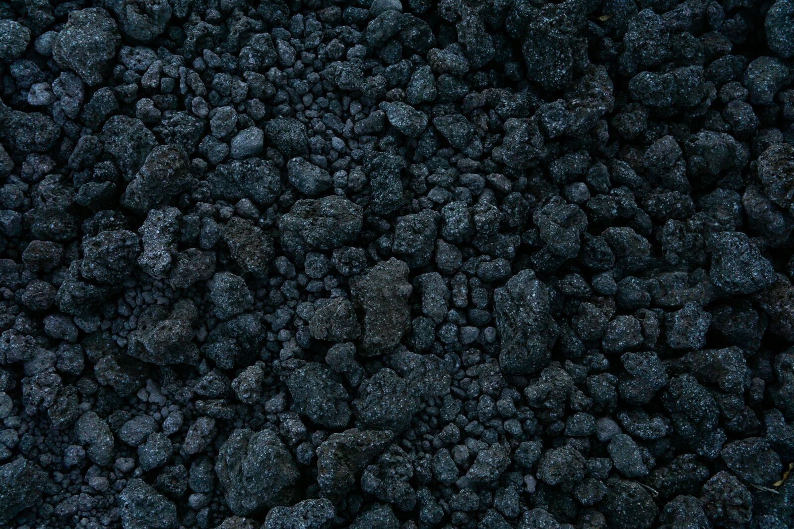
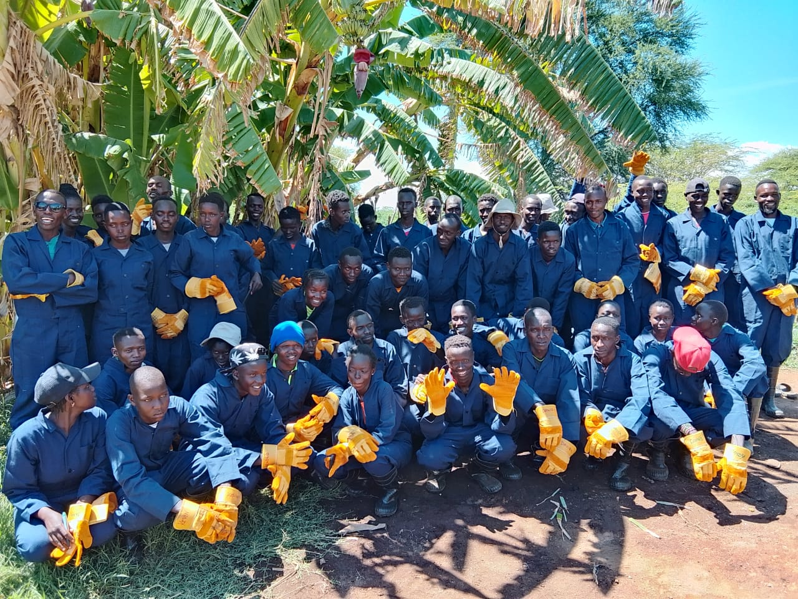

Julie Brown
CEO and co-founder
Purchased and issued 2.5M+ carbon credits and helped secure $250M for carbon project development.
What we do
Invasive mesquite (Prosopis juliflora, known locally as mathenge) has overrun about two million hectares of Kenya. We clear it with local communities and turn it into biochar, a stable form of carbon. From that one source, you can buy carbon removal credits, use biochar to improve your soil, or license the kiln that makes it.
Carbon removal credits

Biochar is a high-carbon material produced through the thermal decomposition of biomass in a low-oxygen environment, a process known as pyrolysis. Our feedstock is woody invasive species like mesquite, converted using our proprietary Nomad Pyro System so that the carbon they contain is captured and locked into the soil for centuries instead of being released back into the atmosphere.
We make our biochar under Puro.earth’s biochar methodology. Our biochar credits give businesses a credible, measurable way to remove carbon while directly funding the removal of invasive species and the restoration of degraded land. We also offer forward credits to buyers who want to secure future carbon removals. See how we measure.
Enquire about carbon removal creditsBiochar

Our biochar soil amendment is produced from woody invasive species like mesquite, processed through our proprietary Nomad Pyro System. Applied to depleted or degraded soil, it improves water retention, boosts microbial activity, and increases crop yields, turning land that invasive species have damaged into land that supports agriculture again.
For farmers and land managers, it offers a practical way to rebuild soil health while directly supporting the removal of invasive species from the landscape.
Enquire about biocharTechnology
Our mobile, tech-enabled pyrolysis kiln goes to where the invasive biomass is and turns it into biochar on site. It runs in Baringo County today and puts local communities to work.
We sell and license the Nomad Pyro System to partners around the world, extending our model to other producers working to remove invasive species from their own land.
Buy or license the kilnWhere we operate
Operations are running in Baringo County with active land agreements across farm and conservation land. Expansion into Kajiado, Turkana, and Samburu is underway.
Our proof-of-concept operation, running since 2022 with 25 mobile kilns across farm and conservation land. Community land agreements with Kibogoch and Shompole conservancies, supported by a formal partnership with Baringo County Government and scientific oversight from KEFRI.
Active planning for deployment across Kajiado, Turkana, and Samburu counties, each home to significant mesquite encroachment and underserved pastoralist communities. Existing kiln production capacity and community engagement frameworks are directly replicable across these geographies.
The Riziki model is feedstock-agnostic and geography-flexible. Anywhere invasive species degrade land and impoverish communities, our mobile kiln infrastructure can be deployed. Kiln technology licensing and operational partnerships extend our reach beyond direct operations.
Who we are
The people turning invasive mesquite into restored land.
Your message is on its way to our team.
Looking to buy carbon removal credits or biochar, or to license the Nomad Pyro System Kiln? Want to partner with us, invest, or join the effort? We would love to hear from you.
✉ info@nbs-ea.com ☎ +254 181 113865 ⚲ P.O. Box 61321, City Square, Nairobi, Kenya